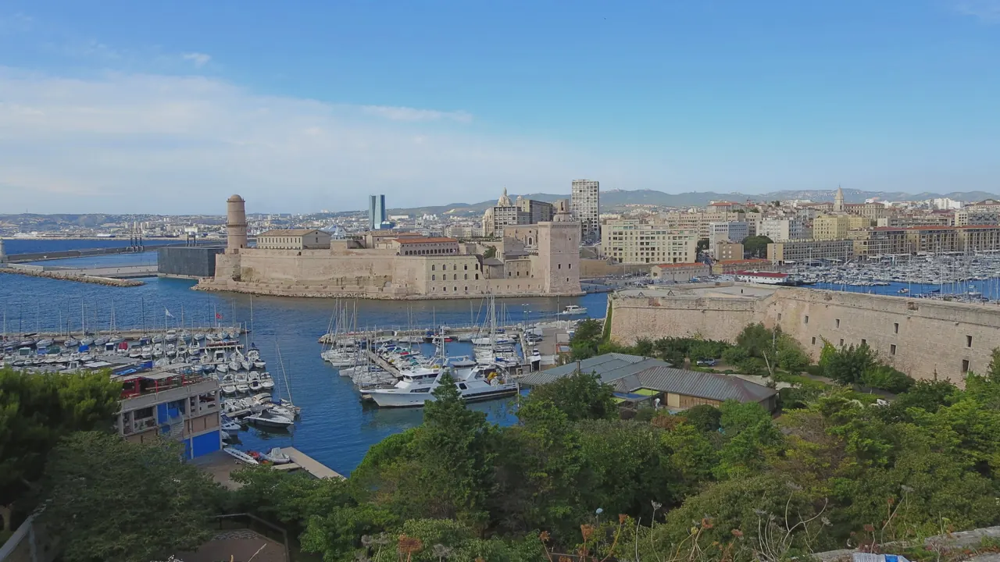
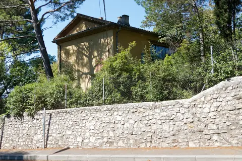
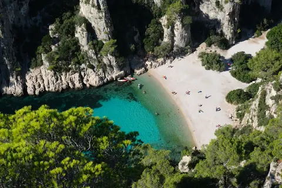
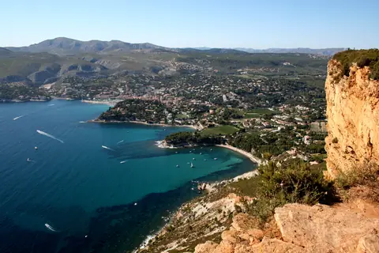
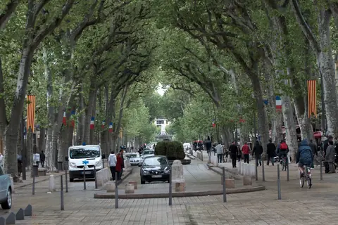

{kind=link}
관광·미술관
Nous avons déjà des billets.
이미 표가 있습니다.
누 자봉 데자 데 비예

12세기 예루살렘 성 요한 기사단(몰타 기사단) 사령부 터에 1660년 루이 14세의 명으로 건설된 마르세유 구항구의 관문 요새다.
루이 14세는 외적의 침략을 막는 동시에 반란이 잦던 마르세유 시민들을 감시하고 진압하기 위해 요새의 대포 구멍을 바다가 아닌 마르세유 도심 쪽을 향하도록 설계했다.
2013년 뮈셈(Mucem) 개관과 함께 요새 전체가 복원되어 시민과 여행자를 위한 공중 테라스 정원으로 변모했으며, 15세기 르네 왕의 사각 탑(Tour du Roi René)과 등대 탑(Tour du Fanal), 그리고 지중해 허브와 감귤 나무가 심어진 '이주의 정원(Jardin des Migrations)'이 성벽을 따라 펼쳐진다.
"왕의 감시 요새에서 가장 평화로운 지중해 공중 정원으로 탈바꿈한 역사의 반전을 맛보는 곳이다." 뮈셈 신관에서 공중 보도교를 건너 요새로 진입한 뒤, 성벽 벤치에 앉아 지중해로 드나드는 요트와 맞은편 성 니콜라 요새를 바라보며 45~60분간 여유로운 휴식을 즐기기에 마르세유에서 가장 완벽한 쉼터다.
| 운영시간 | 9/1–11/2 화요일 제외 매일 10:00–19:00. 야외 구역·정원 입장 무료 |
|---|---|
| 휴무 | 화요일 휴관 (그 외 5/1·12/25 휴관) |
| 요금 | 무료 |
| 예약 | 개인 방문 예약 불필요(야외 무료). 단체는 가이드 투어 15일 전·자율 관람 1주 전 예약 |
| 소요시간 | 70분 재확인 |
| 항목 | 상세 정보 |
|---|---|
| 위치 | Fort Saint-Jean, 13002 Marseille |
| 운영/요금 | 매일 10:00–19:00 (화요일 휴무, Mucem 운영시간 연동) / 외부 정원 및 성벽 구역 입장 무료 |
| 접근 동선 | Mucem J4 신관 옥상에서 공중 보도교로 진입 → 요새 정원 산책 → 동쪽 Passerelle Saint-Laurent 보도교를 통해 Le Panier 구시가지로 이동 (완벽한 무장애 한붓그리기 동선) |
| 편의시설 | 성벽 그늘 벤치 다수, 화장실, 테라스 카페/레스토랑 완비 |
Nous avons déjà des billets.
이미 표가 있습니다.
누 자봉 데자 데 비예
On peut prendre des photos ?
사진 찍어도 되나요?
옹 푀 프랑드르 데 포토
Où commence la visite ?
관람은 어디서 시작하나요?
우 코망스 라 비지트

폴 세잔이 생의 마지막 4년(1902–1906) 동안 매일 그림을 그렸던 언덕 위 아틀리에. 북향 채광창, 대형 캔버스용 벽 슬릿, 정물화에 등장했던 올리브 단지와 해골이 그대로 보존된 근대 미술의 성지.

폴 세잔이 20세부터 60세까지 40년간 머물며 화가로 성장했던 가문의 여름 저택. 살롱의 초기 벽화, 마로니에 가로수길, 분수 연못, 그리고 화가가 최초로 생트 빅투아르 산을 그렸던 역사적 현장.

마르세유와 카시스 사이에 걸쳐 20km에 걸쳐 펼쳐진 유럽 유일의 지중해 연안 국립공원. 에메랄드빛 바다로 수직 낙하하는 백색 석회암 피오르 협만들의 장관.

엑상프로방스 건축물의 황금빛 사암을 공급하던 고대·중세 채석장. 직각으로 깎인 붉은 사암 절벽과 소나무 숲 사이에서 세잔이 큐비즘의 기하학적 구도를 태동시켰던 야외 작업장.

유럽 최고 높이의 해안 절벽 캅 카나유(Cap Canaille) 아래 자리한 아늑한 지중해 어항. 파스텔톤 가옥, 칼랑크 국립공원 유람선 출발지, 유서 깊은 카시스 화이트 와인(AOC Cassis)의 고향.

1651년 옛 성벽 자리에 조성된 440m의 플라타너스 가로수길. 북쪽의 활기찬 카페와 남쪽의 고요한 17세기 귀족 저택, 4개의 유서 깊은 분수가 관통하는 엑상프로방스의 심장.